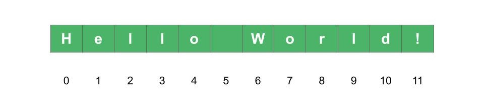
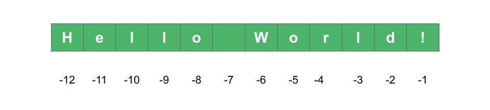
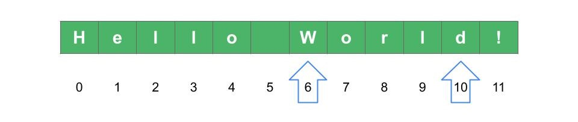
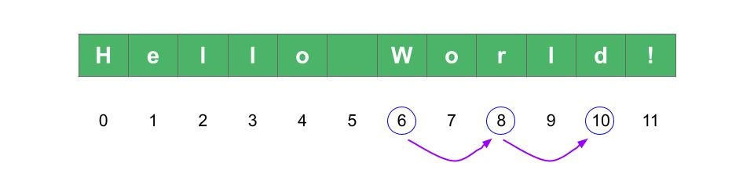

Chapter 5: Working with strings#
Python strings are everywhere. Most of your Python programs will work with strings in one way or the other. For example, you can use strings to work with large textual data, analyze it, retrieve specific information from text files, etc. You can also use strings to print part of the information that comes from a program, debugging and more.
In this article you are going to learn what are the most common use cases of Python strings, how to retrieve basic parts of a string and different ways in which you can show information using the print() function.
Python strings: the basics#
In a previous article you learned the basic data types Python has to offer. One of them are strings, which is the topic of the present article.
What are Python strings?#
Strings are sequences of characters which are enclosed in either single, double or triple quotes.
Open a new terminal and enter the Python interpreter (if you don’t know how to do this, refer to the article on using the terminal and Python interpreter). Create a new variable called my_string and assign the string value “Hello World!”:
>>> my_string = "Hello World!"
>>> my_string
'Hello World!'
>>> print(my_string)
Hello World!
If you write the name of the variable and hit Enter, the terminal will output the value assigned to the variable. Note that the terminal includes single quotes around Hello World!. But if you use the print() function to show the value instead, the terminal now shows the value Hello World! without quotes.
Python strings can even be empty. This can be useful in some cases as you will see in later chapters. To create an empty string, open and close quotes with nothing in between:
>>> empty_string = ""
>>> empty_string
''
>>> print(empty_string)
>>>
You can see that the same thing happened as with the previous example. If you define the empty string with double quotes, writing the name of the variable and hitting Enter will show the empty string with single quotes. If you use the print() function instead, the quotes are not shown, and in this case there is an empty space in the screen as the output.
What is the length of a string?#
Every string has different properties. One of the most commonly used property is the number of characters, or the length of the string.
To obtain the length of a string, use the len() function. Let’s continue with our example string “Hello World!”. If you manually count the number of characters of this string (including the whitespace between both words) you will find there are 12 of them. Let’s check this with the len() function:
>>> my_string = 'Hello World!'
>>> len(my_string)
12
There are other functions to work with strings. You will learn more about them in later chapters.
String index notation#
You can retrieve specific characters of a string by using the index notation. To access a specific character from a string, write the name of the variable followed by square brackets. Inside the square brackets enter the index corresponding to the position of the character.
>>> my_string[index]
What is the index of a string?#
The index is an integer value indicating the position of the character in the string. Index values start at 0 for the first position, then 1 for the second position, 2 for the third, and so on.

Fig. 9 Index (positive) in a string#
Note that the index of the last element is not equal to the number of characters in the string, but one less. This is because the index starts with 0 instead of 1. In this example the number of characters (the length of the string) is 12, while the index of the last character is 11.
For example, if you want to access the first character of the string (in this case it is the letter H) use the index value of 0 inside the square brackets:
>>> my_string = 'Hello World!'
>>> my_string[0]
'H'
If you want to retrieve the fifth element, this corresponds to the index 4:
>>> my_string = 'Hello World!'
>>> my_string[4]
'o'
Index can also be negative. For the case of negative indexes you have to think in reverse: -1 is the last character in the string, -2 is the previous to last, etc.

Fig. 10 Index (negative) in a string#
In this case, the first character of the string can be retrieved using a negative index with a value equal to the length of the string, which is -12:
>>> my_string = 'Hello World!'
>>> my_string[-12]
'H'
What would happen if you try to access an element whose index goes out of range?
>>> my_string = 'Hello World!'
>>> my_string[12]
Traceback (most recent call last):
File "<stdin>", line 1, in <module>
IndexError: string index out of range
>>> my_string[-13]
Traceback (most recent call last):
File "<stdin>", line 1, in <module>
IndexError: string index out of range
As expected, the Python interpreter throws an IndexError indicating that the index is out of range.
String slice notation#
You can do more than select just one specific character from a string. The square bracket notation lets you retrieve a specified range of values from a string. For example, you may want to select the “World” part of the string (without the last exclamation character).
In order to do that you need to use two index values: the starting and stopping positions separated by a colon:
>>> my_string[start:stop]
This will return a string ranging from the start index all the way through stop-1. The second index stop is not included in the output. One way to remember this rule is to think of the number of characters returned as the difference between stop and start.
The rules are:
First index
startis includedSecond index
stopis not includednumber of characters =
stop-start
To retrieve the “World” part of your string, you need to go from index 6 through index 10 (included).

Fig. 11 Slice notation in strings#
So the first index will be 6, and the second index will be 11 (one more).
>>> my_string = 'Hello World!'
>>> my_string[6:11]
'World'
The difference between 11 and 6 is 5, which is the number of characters in the string “World”.
You can leave the start or end parameters empty. If you omit the start parameter, it will default to zero, while omitting the end parameter will default to the last character of the string.
>>> my_string[:5]
'Hello'
>>> my_string[6:]
'World!'
You can also retrieve a substring and skipping certain characters from it. For example, say you want the substring “World” but only the characters that have an even index. In this case they are 6, 8 and 10. The output should be “Wrd”.

Fig. 12 Slice notation with step#
There is a third parameter in slice notation which is the step. This is also an integer parameter and indicates how many indices to avoid on each pass (the default value of the step is 1).
>>> my_string = 'Hello World!'
>>> my_string[6:11:2]
'Wrd'
The step parameter can also be negative. A negative step makes the output of the substring go backwards. For example, if you want the string “World” become “dlroW”, use a step value of -1, a start of 10 and a stop of 5:
>>> my_string = 'Hello World!'
>>> my_string[10:5:-1]
'dlroW'
Python strings are immutable#
You may be wondering if you can modify the elements of a string. For example in the string “Hello World!”, the character “W” needs to change to lowercase: “w”. You could try to assign the character “w” to the string at index position 6 (where the “W” character is located):
>>> my_string[6] = 'w'
Traceback (most recent call last):
File "<stdin>", line 1, in <module>
TypeError: 'str' object does not support item assignment
Python throws an error saying that a string object does not support item assignment. So one possible solution is to simply create a new variable and make the desired string using the old variable. For example:
>>> my_new_string = my_string[:6] + 'w' + my_string[7:]
>>> my_new_string
'Hello world!'
Format strings#
There are different ways in which a string can be constructed given some variables. For example, say you want to make a string with a welcoming message for a given user and inform their age.
>>> user = 'John'
>>> age = 23
To make an automatic welcoming text string given these variables, you can make use of format strings. The welcoming message can be something like “Welcome John ! You are 23 years old”. Instead of directly writing the strings John and 23, let’s use the variables just defined. This can be useful in cases where the variable changes, and the welcoming message needs to change automatically without the need to write everything from scratch.
To make a format string, use curly braces {} where the variables should be located. At the end of the string use a dot followed by “format”. The format method takes two parameters in this case: the user and the age. Each of these variables will be replaced where the curly braces are placed, in order.
>>> user = 'John'
>>> age = 23
>>> 'Welcome {} ! You are {} years old.'.format(user, age)
'Welcome John ! You are 23 years old.'
This is a very basic example of Python format strings. There is a lot more you can do with this, but that is something for another time. For more information you can read this article.
Conclusion#
In this article you have learned the basics of Python strings. Python strings are one of the most important data types, and many programs use them in one way or another. Here is a list of the topics covered on this article:
What is a string
How to compute the length of a string
String index and slice notation
Immutability of strings
Format strings: the basics
Exercises#
Once you read about the basics of Python strings, get ready to practice with this set of exercises. Don’t give up!
In your own words, explain what is a Python string, and what is it used for. Think of different use cases where you may want or need to work with Python strings.
Create a new string and save it to a variable. The contents of the string can be anything you like, such as ‘Hello! I am learning about Python strings.’.
What is the length of the string you created in exercise #2? Count the characters manually and check your answer by using the
len()function.Use the square bracket index notation to retrieve the first and last characters of the string. Use non-negative index values for this exercise.
Repeat exercise #4, but this time use only negative index values.
Use the slice notation to retrieve a substring. For example, if the string was ‘Hello! I am learning about Python strings.’ you could retrieve the word Python. Use non-negative index values for this exercise.
Repeat exercise #6 using only negative index values.
Use the slice notation to return the complete string in reverse order.